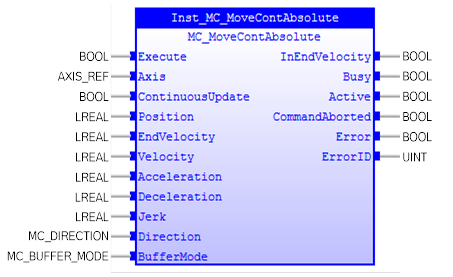
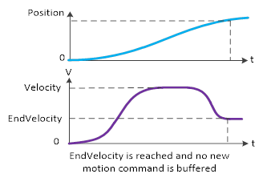
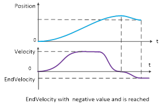
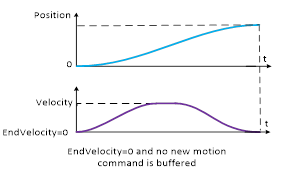
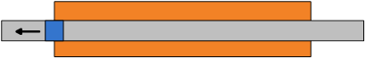
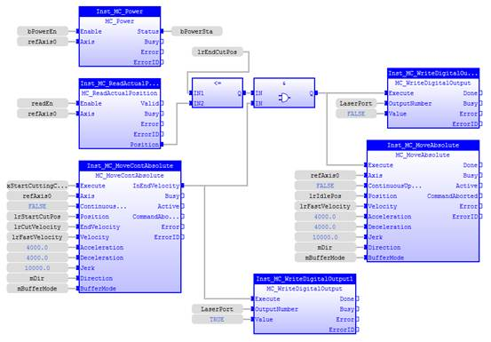
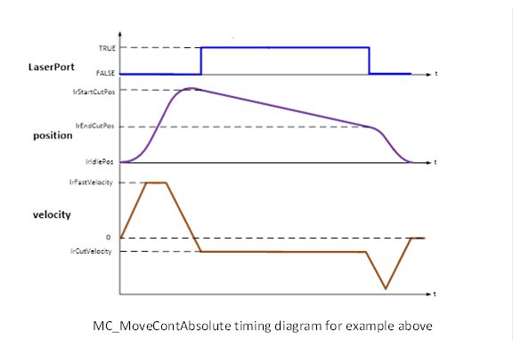

MC_MoveContAbsolute
Commands a controlled motion to a specified absolute
position with the specified end velocity.

Description:
MC_MoveContAbsolute commands a controlled motion to a
specified absolute position with the specified end velocity. If the commanded
position is reached and no new motion command is put into the buffer, the axis
continues to run with the specified 'EndVelocity'.

You can set ‘EndVelocity’ to a negative value. The process
is divided into two steps: ‘Deceleration’ and ‘Acceleration’ steps.

If ‘EndVelocity’ is set to 0, MC_MoveContAbsolute functions the
same as MC_MoveAbsolute.

If input ‘Acceleration’, ‘Deceleration’, and ‘Jerk’ are
zero, these values will be set to the maximum value.
Input parameter ‘Jerk’ can be used to accelerate or
decelerate smoothly.
Make sure the input and output parameters are of data type
indicated in the table below.
The axis will change to State ‘ContinuousMotion’ (meaning it will
not stop by itself) after it is executed.
Negative velocity * negative direction = positive velocity.
‘mcShortedWay’ is used for modulo axis motion.
Inputs/Outputs:
|
Name
|
Data Type
|
Description
|
|
INPUTS
|
|
Execute
|
BOOL
|
Start the motion at its rising edge
|
|
Axis
|
AXIS_REF
|
Reference to the axis
|
|
ContinuousUpdate
|
BOOL
|
TRUE:
when the function block is triggered (rising ‘Execute’), it will - as long
as it stays TRUE – make the function block use the current values of the
input variables and apply it to the ongoing movement.
FALSE: with the rising edge of the
‘Execute’ input, a change in the input parameters is ignored during the whole
movement.
|
|
Position
|
LREAL
|
Command position for the motion.
|
|
EndVelocity
|
LREAL
|
Signed Value of the end velocity
|
|
Velocity
|
LREAL
|
Value of the maximum velocity
|
|
Acceleration
|
LREAL
|
Value of the acceleration
|
|
Deceleration
|
LREAL
|
Value of the deceleration
|
|
Jerk
|
LREAL
|
Value of the Jerk
|
|
Direction
|
MC_DIRECTION
|
Enumerated
type:
1: mcShortedWay
2: mcPositiveDirection
3: mcNegativeDirection
4: mcCurrentDirection
|
|
BufferMode
|
MC_BUFFER_MODE
|
Defines the chronological sequence
of the FB.
|
|
OUTPUTS
|
|
InEndVelocity
|
BOOL
|
Commanded
distance reached and running at requested end velocity
|
|
Busy
|
BOOL
|
The
FB is not finished and new output values are to be expected
|
|
Active
|
BOOL
|
Indicates
that the FB has control on the axis
|
|
CommandAborted
|
BOOL
|
‘Command’
is aborted by another command
|
|
Error
|
BOOL
|
Signals
that an error has occurred within the FB
|
|
ErrorID
|
UINT
|
Error
identification
|
Examples:
Example 1:
One linear axis is used to cut a workpiece carrying a laser device.
From ‘lrIdlePos’, the working chain is as follows:
1. Move the laser head with fast velocity over the position ‘lrStartCutPos’.
Laser is off during this movement:
2. Turn back and make sure to have the speed ‘lrCutVelocity’
when at position ‘lrStartCutPos’. At this position, laser is switched on:
3
.Travel over the
work piece with this constant speed while laser is on:
4
. When reaching ‘lrEndCutPos’,
laser is switched off. Afterwards, move back to idle position with fast
velocity:

During the cutting process, the laser head must move with a
fix velocity. No acceleration nor deceleration phase is tolerated. The laser head
must move back to its waiting position after the cutting has finished.
The process can be achieved with the FB MC_MoveContAbsolute with
the following program:
|
 Example
Example
|
|
VAR
Inst_MC_Power :
MC_Power
;
Inst_MC_ReadActualPosition :
MC_ReadActualPosition
;
refAxis0 :
lib:AXIS_REF
;
(*$desc=Axis
reference for axis 0*)
bPowerEn :
BOOL
:=
FALSE
;
(*$desc=To
enable axis 0 and it is bound to IN1*)
(*$profile=IO*)
(*$embed=(VERS=1 MODE=0 POINT=1)*)
readEn :
BOOL
:=
TRUE
;
(*$desc=Read
axis actual position*)
lrEndCutPos :
LREAL
:=
LREAL#50.0
;
(*$desc=The end
position to switch off laser cutting*)
Inst_MC_WriteDigitalOutput :
MC_WriteDigitalOutput
;
LaserPort :
INT
:=
INT#8
;
(*$desc=Laser
switch on port number*)
bPowerSta :
BOOL
:=
FALSE
;
(*$desc=Axis
power enable status*)
Inst_MC_WriteDigitalOutput1 :
MC_WriteDigitalOutput
;
Inst_MC_MoveContAbsolute :
MC_MoveContAbsolute
;
xStartCuttingCycle :
BOOL
:=
FALSE
;
(*$desc=To
start cutting*)
lrStartCutPos :
LREAL
:=
LREAL#100.0
;
(*$desc=Starting
cutting position*)
lrCutVelocity :
LREAL
:=
LREAL#-100.0
;
lrFastVelocity :
LREAL
:=
LREAL#500.0
;
(*$desc=Fast
motion velocity*)
mDir :
MC_DIRECTION
:= mcPositiveDirection ;
mBufferMode :
MC_BUFFER_MODE
:= mcAborting ;
Inst_MC_MoveAbsolute :
MC_MoveAbsolute
;
lrIdlePos :
LREAL
:=
LREAL#0
;
END_VAR
|
|

|
With a rising edge of ‘xStartCuttingCycle’,
MC_MoveContAbsolute will move axis0 with ‘lrFastVelocity’ over ‘lrStartCutPos’,
turn back and have the speed ‘lrCutVelocity’ when reaching ‘lrStartCutPos’ again
in negative direction. In this point in time, ‘InEndVelocity’ is set, and the
laser is switched on. As no other motion FB interrupts this movement,
MC_MoveContAbsolute will keep Axis0 travelling in negative direction with the
current speed. Once the axis has overstepped the position ‘lrEndPos’, where
laser is switched off, MC_MoveAbsolute moves the axis with high speed to its
idle position:

See also: